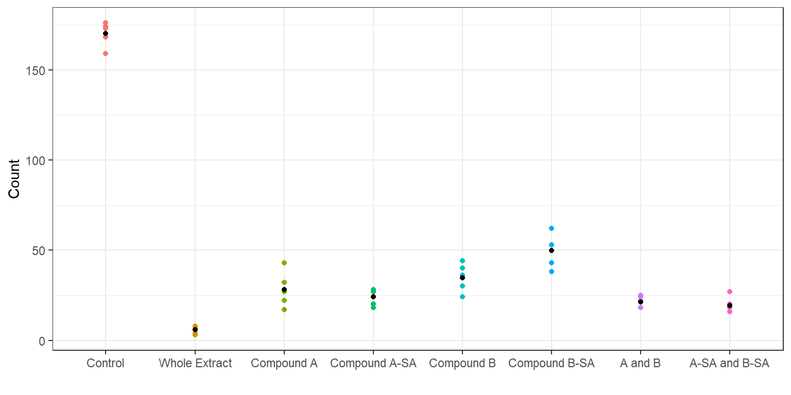
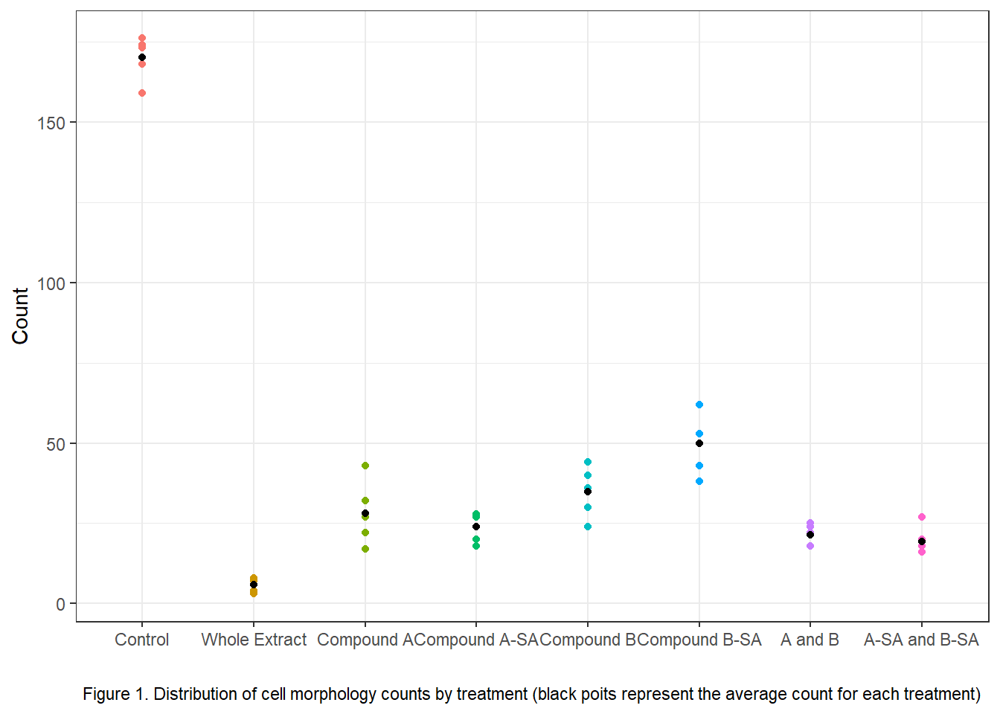

| No Change | GT Only | PH Only | Buds Only | GT & PH | GT & Buds | PH & Buds | Multi GT | |
|---|---|---|---|---|---|---|---|---|
| Control | 24 ± 7.11 | 170 ± 6.82 | 1.8 ± 1.3 | 4.2 ± 2.86 | 0 ± 0 | 0 ± 0 | 0 ± 0 | 0 ± 0 |
| Whole Extract | 185.4 ± 7.23 | 6 ± 2.35 | 1.4 ± 1.95 | 7.2 ± 6.46 | 0 ± 0 | 0 ± 0 | 0 ± 0 | 0 ± 0 |
| Compound A | 124.4 ± 12.82 | 13.8 ± 4.97 | 28.4 ± 3.85 | 11 ± 4.36 | 0 ± 0 | 10.4 ± 4.04 | 8 ± 2.24 | 4 ± 1.87 |
| Compound A-SA | 137.8 ± 10.33 | 10.8 ± 4.09 | 27.6 ± 3.29 | 5.6 ± 4.72 | 0.4 ± 0.89 | 10.2 ± 4.21 | 5 ± 2.74 | 2.6 ± 2.07 |
| Compound B | 138.2 ± 11.3 | 24.4 ± 7.64 | 13.4 ± 4.51 | 10.6 ± 4.56 | 0.8 ± 1.1 | 6.2 ± 1.92 | 3 ± 1.87 | 3.4 ± 2.41 |
| Compound B-SA | 122.8 ± 15.29 | 44.2 ± 11.32 | 18.6 ± 9.86 | 7 ± 2.24 | 0.4 ± 0.55 | 3 ± 3.46 | 1.8 ± 1.3 | 2.2 ± 2.68 |
| A and B | 162.8 ± 12.09 | 17.8 ± 2.17 | 14.8 ± 11.88 | 0.8 ± 1.3 | 1.4 ± 1.34 | 1.4 ± 0.89 | 0.2 ± 0.45 | 0.8 ± 0.84 |
| A-SA and B-SA | 148.2 ± 13.14 | 17 ± 4.3 | 30 ± 9.33 | 1 ± 1.41 | 0.8 ± 0.84 | 1 ± 1 | 1.4 ± 2.19 | 0.6 ± 0.89 |
1. Introduction
The limited availability of safe and effective antifungal treatments makes the exploration of new compounds essential in combating fungal infections. Candida albicans is an opportunistic fungus known for its ability to switch between different forms, particularly from a yeast (single-cell) form to filamentous forms like hyphea and pseudohyphae, which enhance its invasiveness and virulence. This project aims to determine whether chemical compounds isolated from Aloe arborescens can inhibit the germination of C. albicans and reduce the formation of hyphae.
To investigate this, researchers conducted morphogenesis assays, exposing a strain of C. albicans to seven treatments, including a 0.2-micron filtered Aloe arborescens extract, isolated compounds ‘A’ and ‘B,’ their commercial versions from Sigma-Aldrich (‘A-SA’ and ‘B-SA’), and combinations of these compounds. In each treatment, 200 cells were observed in five replicates, and their forms were categorized based on the presence of hyphae (denoted GT), buds, or pseudohyphae (denoted PH).
The primary hypotheses for this research are: (1) exposure to any of the seven treatments will significantly inhibit fungal germination and reduce hyphae formation; (2) treatments involving compound ‘A’ will be more effective than those involving compound ‘B’; and (3) the 0.2-milcron filtered Aloe arborescens extract will show the greatest reduction in hyphae formation compared to the other treatments.
The findings from this study could have important future implications for antimycotic treatments, potentially identifying new antifungal agents that can improve the options available for treating fungal infections.
2. Methodology
2.1. Data
The dataset, provided by Dr. Marcia Lee from Miami University, contains 40 observations with 12 variables, each detailing the response of yeast cells under various treatments. The variables are described as follows:
treatment: Type of treatment applied to the yeast cellsrep: Replicate identifier for each treatment typetube: Unique identifier for the tube containing the treated yeast cellsno_change: Count of cells (out of 200) that show no morphological changesGT_only: Count of cells (out of 200) that develop only a hyphaPH_only: Count of cells (out of 200) that develop only a pseudohyphaBud_only: Count of cells (out of 200) that develop only a budGT_PH: Count of cells (out of 200) that develop both hypha and pseudohyphaGT_Bud: Count of cells (out of 200) that develop both hypha and budPH_Bud: Count of cells (out of 200) that develop both pseudohypha and budmul_GTs: Count of cells (out of 200) that develop multiple hyphae
For modelling purposes, an additional variable to be used as a response variable, called GT_total, was created. This variable sums the total number of cells that exhibit any form of hyphae for each treatment replicate, whether as a standalone effect or in combination with other morphologies.
With this, the final dataset has 40 observations and 13 variables.
2.2. Analysis
As the distribution of cells forming hyphae is not normally distributed, a Poisson generalized linear model (GLM) with an offset of 200, \(log(200)\), was modeled and has the following formula:
\[ log(X_{ij}) = \beta_0 + \beta_1 \times \text{treatment}_{ij}\,+\,log(200);\,i = 1, 2, ..., 7;\,j = 1, 2, ..., 5 \]
where \(X_{ij}\) is the number of cells developing hyphae for the \(i^{th}\) treatment and \(j^{th}\) replicate.
The motivation behind including an offset is that there is an upper limit of 200 cells for each treatment replicate, so the response variable is constrained and cannot increase indefintely. The Poisson distribution, however, assumes that counts can range from zero to infinity, which is problematic when there is actually an upper bound in existence. When counts become constrained near this upper limit, the distribution may become skewed, violating the assumptions of standard count models like the Poisson, which typically assume constant or proportional variance across all levels of the predictor variables.
By introducing an offset, the maximum possible count of 200 is adjusted, which ensures that the response variable stays within a reasonable range. Mathematically, if the term is moved to the left side of the equation above, the left side becomes:
\[ log(X_{ij}) - log(200) = log(\frac{X_{ij}}{200}) \]
This effectively models the logarithm of the proportion of cells forming hyphae relative to the upper bound (200). As a result, the response variable is now constrained to a bounded range between 0 and 1, which is more appopriate when the counts have an upper limit. Thus, the formula for the Poisson GLM with offset can be written as:
\[ log(\frac{X_{ij}}{200}) = \beta_0 + \beta_1 \times \text{treatment}_{ij} \]
Since the response variable is now the logarithm of the proportion of hyphae-forming cells (i.e., the number of hyphae-forming cells divided by the total cell count of 200 for each treatment replicate), comparisons between any two treatment groups will be the logarithm of the ratio of these proportions. Specifically, for two treatment groups, the difference in their log-transformed proportions represents the log of the ratio between the proportion of hyphae-forming cells in one treatment group relative to the proportion in the other.
In Section 3.2, where comparisons are made, the ratio between the two treatment groups is obtained by exponentiating this logarithmic difference. This exponentiation restores the scale of the data back to a ratio of the proportions, which allows for a direct comparison of the relative effectiveness of the two treatments in promoting hyphae formation.
Additionally, to answer the research questions, custom contrasts were applied to compare each pair of treatment groups. When multiple contrasts were tested simultaneously, the Benjamini-Hochberg procedure was used to adjust for the potential inflation of Type I error due to the multiple contrasts. All statistical tests were conducted at a significance level of 0.05.
2.3. Software
All data analysis steps were performed using R version 4.3.1, along with additional packages that will be cited in the reference section.
3. Results
3.1. EDA
First, let’s examine the average counts of morphological attributes across five replicates for each treatment level. Except for the unexposed control group, most of the 200 cells in each replicate for every treatment exhibits no significant changes in the development of any attributes such as hyphae, pseudohyphae, or buds. The control groups is the only group that demonstrates a remarkably high average of 170 cells developing hypha, much higher than the average of 44 cell counts in the compound B-SA group. The average counts of cells developing pseudohypha are around 30 for the treatments involving compound A, compound A-SA, and the combination of A-SA and B-SA. Regardless of the treatment type, very few cells form buds, and even fewer exhibit multiple attributes simultaneously, such as both hypha and pseudohypha. However, compared to other groups, the treatments with compound A and compound A-SA show a relatively higher occurence of cells developing both hypha and buds at the same time. It is not common to see cells developing multiple hyphae in this case.
So far, counts have been categorized into exclusive groups, such as cells showing no changes, developing only hypha, only pseudohypha, only buds, and combinations of these forms. However, the researchers are primarily interested in the formation of hypha. In other words, the development of hypha is the most significant, regardless of whether it occurs as a standalone attribute or in conjunction with other attributes. As a result, the counts of cells forming hyphae were consolidated into a single total column.

Figure 1 shows that the control group exhibits a high number of cells forming hyphae, while the treatment groups display significantly fewer hyphae formations. This suggests that the treatments are effective in reducing hyphae development. Compounds A, B, A-SA, and B-SA appear similarly effective, although compound B-SA is slightly less effective. However, it is challenging to determine from this plot whether treatments with compound A are more effective than those with compound B in reducing hyphae formation. The whole Aloe arborescens extract seems to be the most effective at reducing hyphae development.
Examining the distribution of cells forming hyphae shows a right-skewed pattern. Consequently, tests assuming normality, such as one-way ANOVA, may not be suitable. Therefore, alternative methods for modeling the treatment effect on the total number of cells forming hyphae should be explored.

3.2. Hypothesis Testing
3.2.1. Any treatment will be able to reduce hyphae formation
| Comparison | ratio | P-value |
|---|---|---|
| Whole Extract / Control | 0.035 | 0.0000 |
| A / Control | 0.166 | 0.0000 |
| B / Control | 0.141 | 0.0000 |
| Synthetic A / Control | 0.205 | 0.0000 |
| Synthetic B / Control | 0.293 | 0.0000 |
| A and B / Control | 0.126 | 0.0000 |
| Synethic A and Synthetic B / Control | 0.114 | 0.0000 |
All comparisons are statistically significant (\(p\)-value \(<\) 0.05), and since the ratio of each treatment group to the control group is less than 1, it indicates that all treatments lead to a reduction in hyphae formation compared to the control group.
3.2.2. Treaments involving compound A will be better than those involving compound B
| Comparison | ratio | P-value |
|---|---|---|
| Overall A / Overall B | 0.906 | 0.2142 |
The comparison between treatments involving compound A and those involving compound B is not statistically significant (\(p\)-value \(<\) 0.05), indicating that treatments with compound A are not more effective than those with compound B.
3.2.3. The 0.2 micron filtered Aloe arborescens treatment will be the most effective at reducing hyphae formation
| Comparison | ratio | P-value |
|---|---|---|
| A / Whole Extract | 4.700 | 0.0000 |
| B / Whole Extract | 4.000 | 0.0000 |
| Synthetic A / Whole Extract | 5.800 | 0.0000 |
| Synthetic B / Whole Extract | 8.300 | 0.0000 |
| A and B / Whole Extract | 3.567 | 0.0000 |
| Synethic A and Synthetic B / Whole Extract | 3.233 | 0.0000 |
Once again, all tests are statistically significant (\(p\)-value \(<\) 0.05). Since all of the ratios are bigger than 1, this suggest that the 0.2-micron filtered Aloe arborescens extract is the most effective treatment among the seven treatments tested.
The results also show that using a combination of both compound A and compound B, regardless of whether they are natural or synthetic, is more effective than using either the natural or synthetic form of the compounds individually.
4. Conclusion
After perfoming pairwise contrasts, it can be concluded that all of the significantly inhibit the formation of hyphae. Among them, the 0.2 micron filtered Aloe arborescens extract is found to be the most effective.
When comparing treatments containing compound A to those containing compound B, no significant difference in the effectiveness is observed between the two groups.
5. References
R Core Team (2023). R: A Language and Environment for Statistical Computing. R Foundation for Statistical Computing, Vienna, Austria. https://www.R-project.org/.
Wickham H, François R, Henry L, Müller K, Vaughan D (2023). dplyr: A Grammar of Data Manipulation. R package version 1.1.3, https://CRAN.R-project.org/package=dplyr.
Lenth R (2024). emmeans: Estimated Marginal Means, aka Least-Squares Means. R package version 1.10.4, https://CRAN.R-project.org/package=emmeans.
H. Wickham. ggplot2: Elegant Graphics for Data Analysis. Springer-Verlag New York, 2016.
Iannone R, Cheng J, Schloerke B, Hughes E, Lauer A, Seo J (2024). gt: Easily Create Presentation-Ready Display Tables. R package version 0.10.1, https://CRAN.R-project.org/package=gt.
Mock T (2023). gtExtras: Extending ‘gt’ for Beautiful HTML Tables. R package version 0.5.0, https://CRAN.R-project.org/package=gtExtras.
Wickham H, Vaughan D, Girlich M (2023). tidyr: Tidy Messy Data. R package version 1.3.0, https://CRAN.R-project.org/package=tidyr.
Muldoon, A. (2019, April 15). Custom contrasts in Emmeans. Very statisticious. https://aosmith.rbind.io/2019/04/15/custom-contrasts-emmeans/
Wikimedia Foundation. (2024, November 5). False discovery rate. Wikipedia. https://en.wikipedia.org/wiki/False_discovery_rate